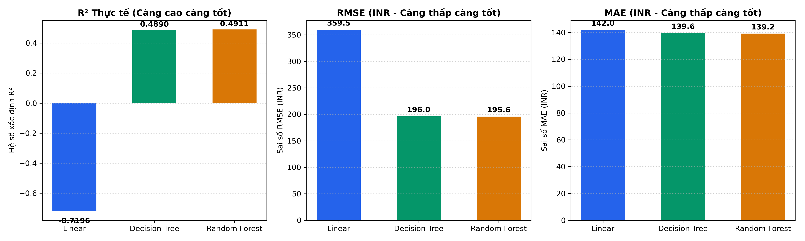
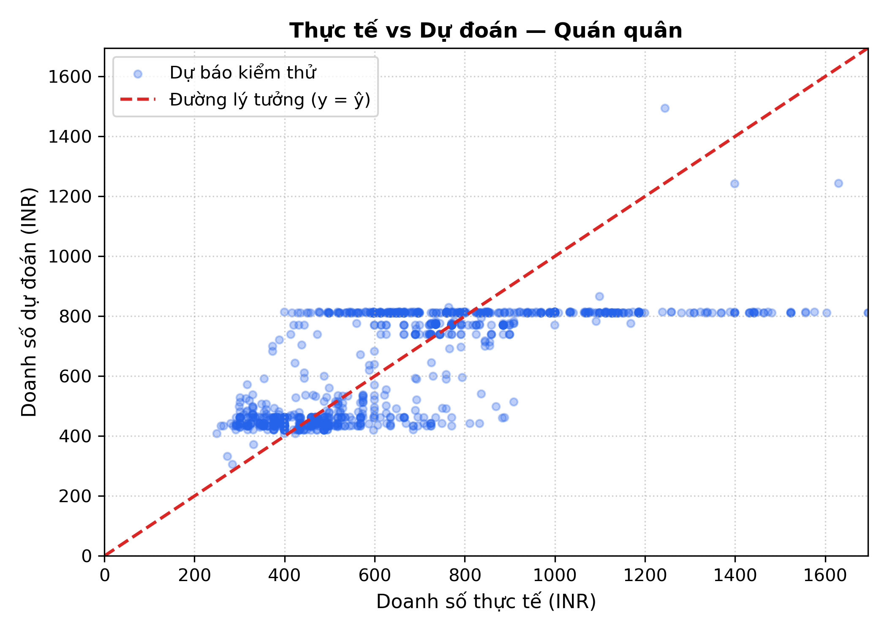
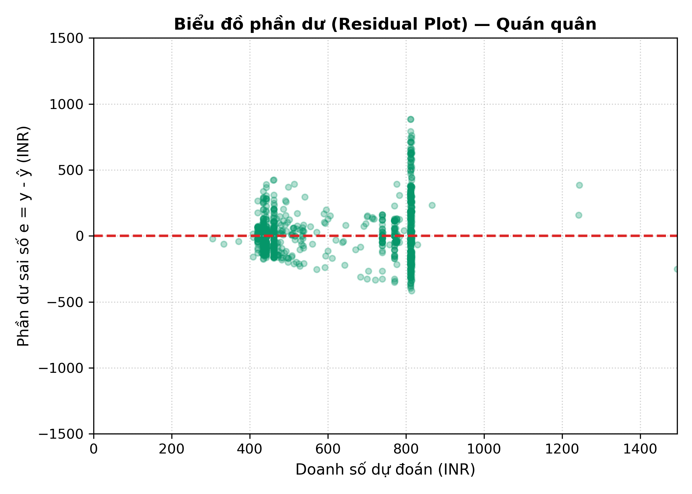
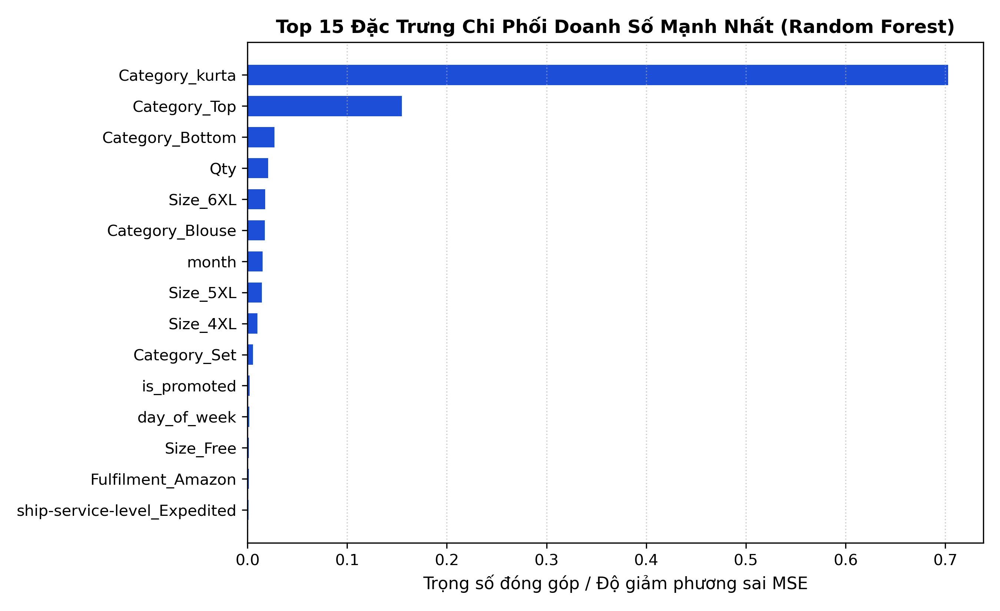

Bản chất toán học 3 thuật toán Scratch NumPy, kiểm định chéo 5-Fold CV, đánh giá độc lập Test set 20.571 mẫu, Residual Plot và Top 15 đặc trưng quan trọng.
| Mô hình | CV R² (Mean) | CV R² (Std) | CV RMSE (Mean) | CV RMSE (Std) |
|---|---|---|---|---|
| Linear Regression | 0.5475 | ± 0.0109 | 0.2593 | ± 0.0027 |
| Decision Tree Regressor | 0.5413 | ± 0.0096 | 0.2610 | ± 0.0025 |
| Random Forest Regressor 🏆 | 0.5484 | ± 0.0092 | 0.2590 | ± 0.0021 |
Ghi chú: Random Forest dẫn đầu với độ lệch chuẩn nhỏ nhất (± 0.0092), chứng minh tính ổn định vượt trội khi kết hợp 20 cây Bagging.
| Thuật toán (Scratch) | R² (Thực tế) | R² (Log) | RMSE (INR) | MAE (INR) | MSE | Đánh giá & Xếp hạng |
|---|---|---|---|---|---|---|
| 🥇 Random Forest Regressor | 0.4911 | 0.5640 | 195.58 | 139.21 | 38.250,21 | Quán quân (Best Model) — Dẫn đầu mọi chỉ số |
| 🥈 Decision Tree Regressor | 0.4890 | 0.5614 | 195.99 | 139.63 | 38.412,08 | Á quân — Tối ưu hóa phân vị nhanh, giải thích rõ |
| 🥉 Linear Regression | -0.7196 | 0.5566 | 359.51 | 142.01 | 129.247,15 | Baseline đối chứng (OLS Normal Equation) |



Nhận xét: Phần dư trung bình xấp xỉ 0 INR chứng minh mô hình không có thiên lệch hệ thống. Các điểm dự báo tập trung cao độ quanh đường lý tưởng ở dải doanh số phổ thông 300 – 1.200 INR.

Theo mô hình Random Forest Regressor, các yếu tố quyết định hàng đầu đến doanh số đơn hàng gồm: